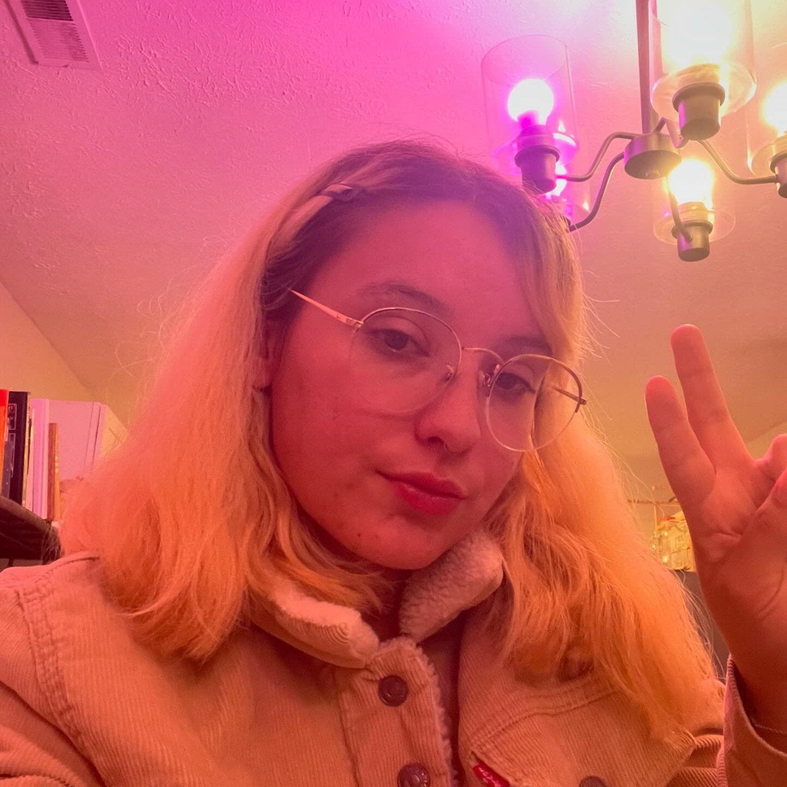

Aspiring Software Engineer & Game Developer
Hi, I‚Äôm Tyler üëã
I'm a multidisciplinary professional currently transitioning into software engineering after years of hands-on experience in door-to-door sales, catering, and childcare. These experiences shaped me into someone who is adaptable, communicative, and grounded in real-world problem-solving.
As a student at WGU, I’ve been building a technical foundation while drawing from my background in people-centered work. I’m passionate about how software can make everyday life easier—whether by improving workflows, creating better user experiences, or solving small but meaningful problems.
At the same time, I’m drawn to the power of storytelling through technology. While I’m not a visual artist, I’m inspired by the idea of building immersive digital experiences that connect and move people. I'm excited to explore how software can be both useful and expressive.